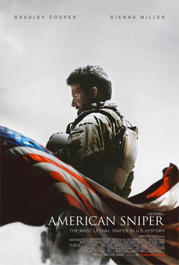

Chris Kyle was nothing more than a Texan man who dreamed of becoming a cowboy, but in his thirties he found out that maybe his life needed something different, something where he could express his real talent, something that could help America in its fight against terrorism. So he joined the SEALs in order to become a sniper. After marrying, Kyle and the other members of the team are called for their first tour of Iraq. Kyle's struggle isn't with his missions, but about his relationship with the reality of the war and, once returned at home, how he manages to handle it with his urban life, his wife and kids.
